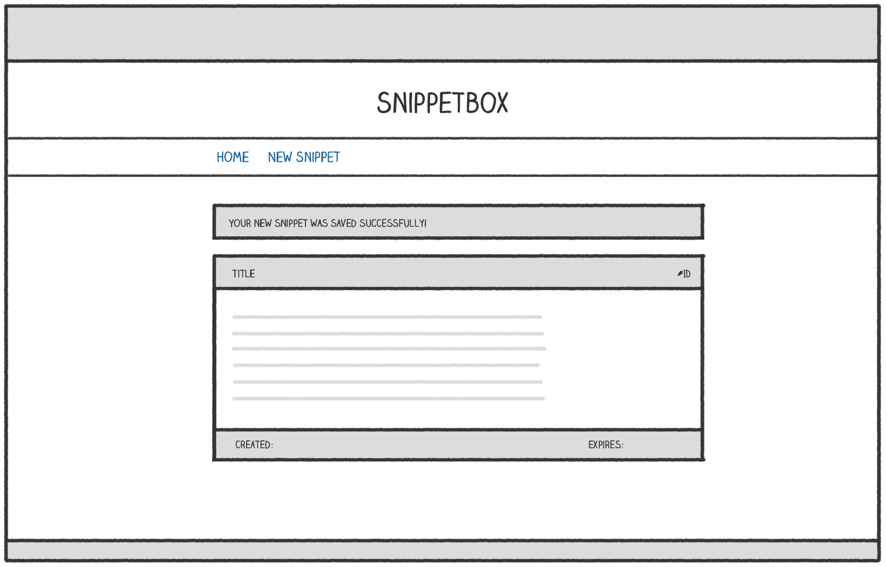

HTTP حالتدار (Stateful HTTP)
در این فصل، نحوه استفاده از جلسات (Sessions) برای ایجاد HTTP حالتدار (Stateful HTTP) را بررسی میکنیم. این به ما امکان میدهد دادههای کاربر (User Data) را بین درخواستهای HTTP (HTTP Requests) مختلف حفظ کنیم.
در این فصل خواهیم آموخت:
- چرا جلسات (Sessions) برای ایجاد برنامههای وب تعاملی (Interactive Web Applications) مهم هستند.
- چگونه جلسات (Sessions) را در Go پیادهسازی کنیم.
- چگونه دادههای جلسه (Session Data) را به صورت ایمن ذخیره و بازیابی کنیم.
یک لمس خوب برای بهبود تجربه کاربری ما نمایش یک پیام تأیید یکباره است که کاربر پس از افزودن یک قطعه جدید میبیند. مانند این:

یک پیام تأیید مانند این باید فقط یک بار برای کاربر نمایش داده شود (بلافاصله پس از ایجاد قطعه) و هیچ کاربر دیگری نباید این پیام را ببیند. اگر مدتی است که برنامهنویسی میکنید، ممکن است این نوع عملکرد را به عنوان یک پیام فلش یا یک تست بشناسید.
برای اینکه این کار را انجام دهیم، باید شروع به اشتراکگذاری دادهها (یا حالت) بین درخواستهای HTTP حالت دار برای همان کاربر کنیم. رایجترین راه برای انجام این کار پیادهسازی یک جلسه برای کاربر است.
در این بخش شما یاد خواهید گرفت:
- چه مدیران جلسه برای کمک به ما در پیادهسازی جلسات در Go در دسترس هستند.
- چگونه میتوانید از جلسات برای به اشتراکگذاری ایمن و مطمئن دادهها بین درخواستها برای یک کاربر خاص استفاده کنید.
- چگونه میتوانید رفتار جلسه (از جمله زمانهای انقضا و تنظیمات کوکی) را بر اساس نیازهای برنامه خود سفارشی کنید.
واژهنامه اصطلاحات فنی (Technical Glossary)
| اصطلاح فارسی | معادل انگلیسی | توضیح |
|---|---|---|
| جلسات | Sessions | مکانیزمی برای حفظ وضعیت کاربر بین درخواستها |
| HTTP حالتدار | Stateful HTTP | حفظ اطلاعات وضعیت بین درخواستهای HTTP |
| دادههای کاربر | User Data | اطلاعات مربوط به کاربر در برنامه |
| درخواستهای HTTP | HTTP Requests | درخواستهای ارسالی از مرورگر به سرور |
| برنامههای وب تعاملی | Interactive Web Applications | برنامههای وب با قابلیت تعامل با کاربر |
| دادههای جلسه | Session Data | اطلاعات ذخیره شده در جلسه کاربر |
| مدیریت جلسه | Session Management | کنترل و مدیریت جلسات کاربران |
| امنیت جلسه | Session Security | حفاظت از دادههای جلسه |
| کوکیهای جلسه | Session Cookies | کوکیهای حاوی شناسه جلسه |
| ذخیرهسازی جلسه | Session Storage | محل نگهداری دادههای جلسه |